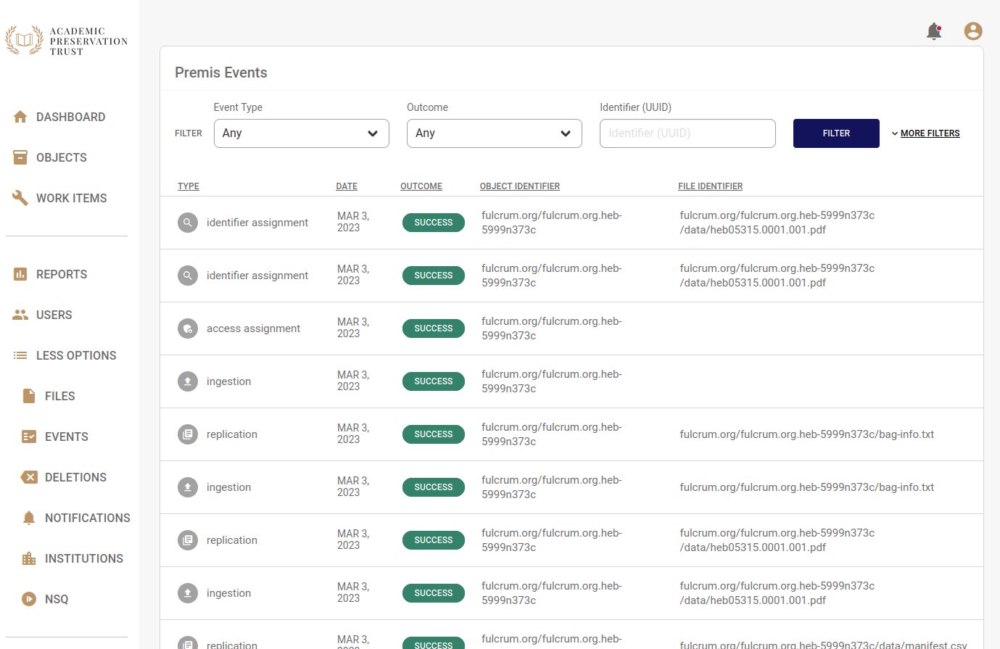

Premis Events
APTrust records PREMIS events for intellectual objects and generic files. You can view a list of all events related to your instution's objects and files by clicking the Events link under More Options tab in the left nav.

Use the filters at the top of the page to filter by event type, date, outcome, file identifier and object identifier.
Note
Note that although the sidebar lists all of the event types defined by the Library of Congress's PREMIS specification, APTrust only implements the event types listed below.
Object-Level Events
The APTrust repository records the following PREMIS events for intellectual objects:
-
Ingestion - The ingest process for the object completed. This means the object record was created and all of the object's files were copied to preservation storage.
-
Creation - The object record was created.
-
Access Assignment - The object was assigned an access setting of Consortia, Institution, or Restricted. See access values for definitions.
-
Identifier Assignment - The object was assigned an identifier. APTrust object identifiers use the pattern
<institution.domain>/<object_name>, where object_name is the name of the tarred bag, minus the .tar extension. For example,test.edu/bag_of_photos. -
Deletion - The object was deleted. This means that all of its component files were deleted. Registry keeps a record of the object and all of its files after deletion, though it does not retain the files themselves.
File-Level Events
APTrust records the following PREMIS events for the generic files that make up each intellectual object:
-
Ingestion - The file has been copied to long-term preservation storage and its metadata has been saved in Registry.
-
Identifier Assignment - The file has been assigned an APTrust identifier, in the form
<object_identifier>/<file_relative_path>, where file_relative_path is the location of the file in the bag in which it was submitted. For example, if test.edu submits a bag called bag_of_photos, the payload file data/photo1.jpg would have the identifiertest.edu/bag_of_photos/data/photo1.jpg. -
Message Digest Calculation - The APTrust ingest process has calculated a message digest for the file. On ingest, there should be two of these events for each file, one with an md5 digest and one with a sha256 digest.
-
Replication - The file has been copied to replication storage. This applies only to files using the Stadard storage option, in which the primary copy exists in S3 in Northern Virginia and the secondard (replicated) copy is in Glacier in Oregon. See storage options for more information.
-
Fixity Check - This records the outcome of a fixity check on this file. APTrust perform fixity checks on items in Standard storage every 90 days, but does not perform fixity checks on items in Glacier-Only or Glacier Deep Archive storage. See storage options for more information. Also note that APTrust checks the sha256 fixity only, even though we also know the md5 fixity value.
-
Deletion - Records when a file was deleted and at whose request.